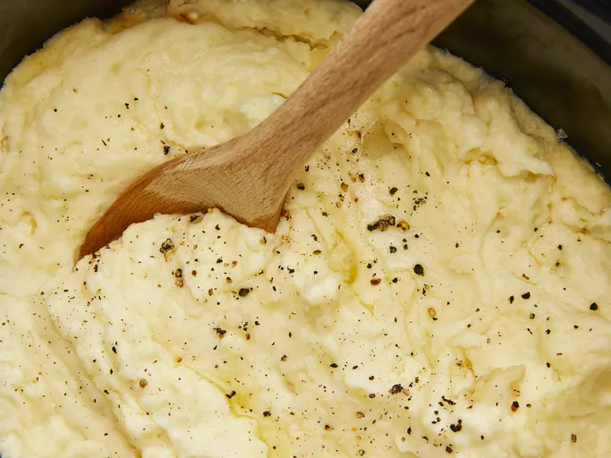

Mashed Potatoes

An image of mashed potatoes being cooked.
Ingredients
- 5 pounds red potatoes, cut into chunks
- 3 cubes chicken bouillon
- 1 tablespoon minced garlic, or to taste
- 1 egg
- 1 (8 ounce) container sour cream
- ⅛ teaspoon ground black pepper
- 1 (8 ounce) package cream cheese, softened
- ½ cup butter
- salt and pepper to taster
Steps
- Place potatoes, bouillon, and garlic in a large pot and cover with water; bring to a boil. Reduce heat to medium-low and simmer until tender, about 15 minutes.
- Drain in a colander over a large bowl, reserving cooking water.
- Mash potatoes with sour cream and cream cheese, adding reserved water as needed to reach desired consistency.
- Transfer mashed potato mixture to a slow cooker, cover, and cook on Low for 2 to 3 hours.
- Just before serving, stir in butter and season with salt and pepper to taste.
- Serve hot and enjoy!